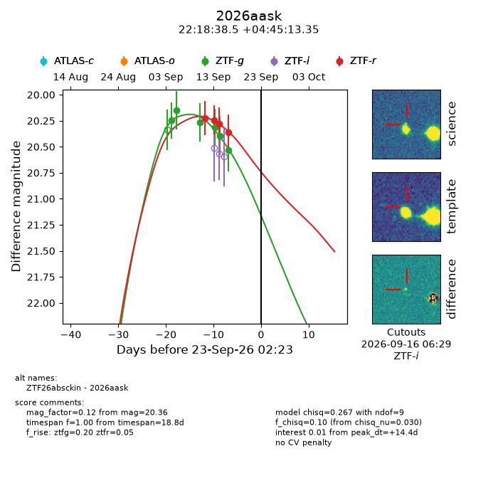
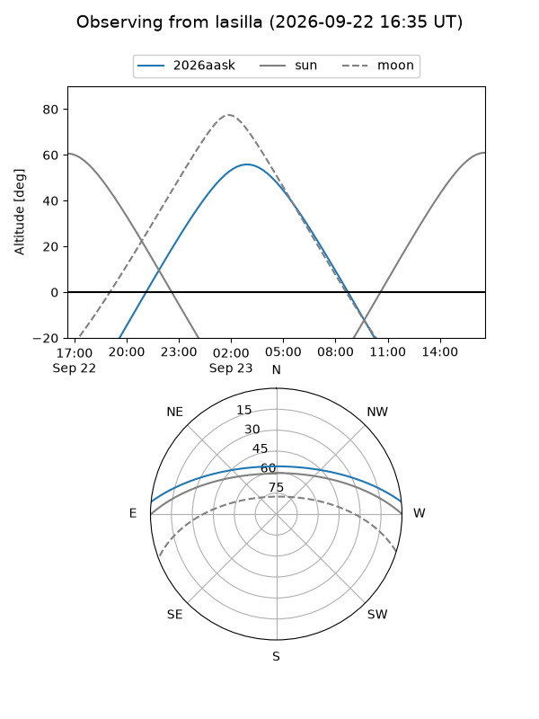
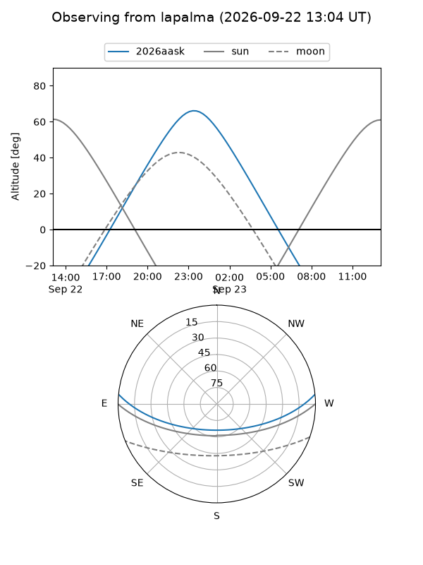
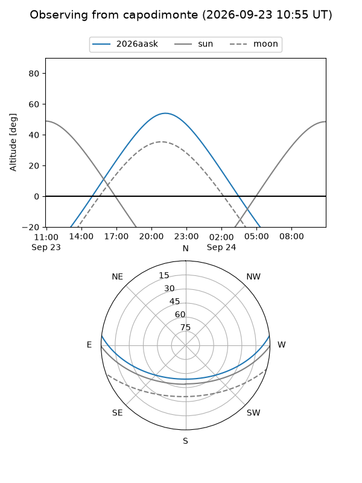
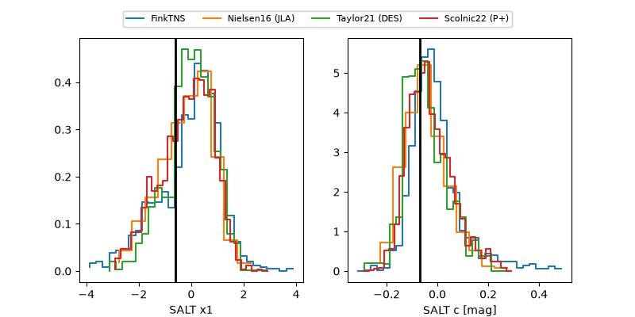

2026aask
Target 2026aask at 2026-09-23 13:56
Aliases and brokers:
FINK-ZTF: ztf.fink-portal.org/ZTF26absckin
Lasair-ZTF: lasair-ztf.lsst.ac.uk/objects/ZTF26absckin
ALeRCE-ZTF: alerce.online/object/ZTF26absckin
YSE-PZ: ziggy.ucolick.org/yse/transient_detail/2026aask
TNS name: wis-tns.org/object/2026aask
Direct TNS query: direct search
alt names
ZTF26absckin (ztf,fink_ztf)
2026aask (tns,yse)
Coordinates:
equatorial (ra, dec) = 334.6603,+4.75371
equatorial (HMS+DMS) = 22:18:38.47,+04:45:13.35
galactic (l, b) = (67.8912,-41.24015)
Flags:
TNS type: nan
peak dt: +14.9
Photometry:
last ztfg=20.53, ztfr=20.36
6 ztfg, 4 ztfr detections
Lightcurve

Visibility



Additional plots
